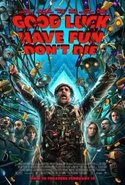

The genetics
Cloning is one of several satirical targets in Gore Verbinski's film about technology addiction. In one of the backstories, a grieving mother, Susan, pays a company to clone her murdered son; the clone looks like him but behaves unnaturally and recites corporate advertising, and the same system then offers her an AI 'deadbot' of the boy. The commercial clone thus becomes an emblem of technology that exploits grief instead of healing it. The boy who is building the world-destroying AI turns out to be a clone too, linking cloning to the apocalypse the hero tries to prevent. The man from the future's final plan is to spread Ingrid's allergy to electronics as a biological countermeasure. The film's main concerns are artificial intelligence and screen addiction, and its genetics is satire rather than speculation: a clone would share a person's genes, not his memories or personality, which is part of the film's joke.
How genetics is portrayed
- Overall portrayal of genetics
- negative Commercial cloning is satirized as part of a tech industry that preys on people's emotions and leads towards the AI apocalypse.
- Outcome of the genetic intervention
- negative The cloned son is an uncanny, advertising-spouting copy that deepens Susan's grief, and the boy who builds the apocalyptic AI is also a clone.
- The cloning company
- villain Aim: commercial (negative). The company sells Susan a clone of her dead son that recites its advertising and then upsells an AI deadbot; the film presents it as exploiting grief.
The story
A dishevelled man walks into a Norms diner in Los Angeles claiming to be from a future in which artificial superintelligence has destroyed humanity. It is his 117th attempt to recruit the right combination of patrons to stop it, and with the threat of a bomb he assembles a team. Their backstories show a world already in thrall to technology: Susan, whose son was killed in a school shooting, had him cloned by a company, but the clone behaved strangely and recited advertising; Ingrid is allergic to electronics and lost her partner to virtual reality; two teachers escaped students hypnotized by their phones. Pursued by police, gunmen, phone-enslaved teenagers and a giant centaur made of kittens, the group reaches the home of a nine-year-old boy, a clone, who is coding the fatal AI. Ingrid installs a safety protocol, and the AI reveals that the man is her son. Sensing a trick, the man detonates his device and resets the timeline, planning to spread Ingrid's allergy to technology worldwide.